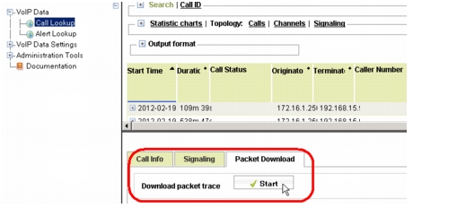

Downloading Packets for VoIP Calls You can download packets for individual VoIP calls in the VoiP web UI. Note the following: This functionality is supported only on appliances with High Speed Capture functionality. You must have Administrator privileges on the appliance to enable packet captures, and Standard or Administrator privileges to download packets. Packet availability depends on the storage capacity in the rolling buffer. You should download packets for a call as soon as possible. Otherwise, the packets might get overwritten. To allow VoIP packet downloads, go to the VoIP web UI > Administration Tools > UI Settings and select the Allow VoIP Packet Download option. To download packets for a VoIP call, do the following: 1) Search for the call in the VoIP Data > Call Lookup page. 2) Select the call in the Call Lookup list. The Call Info, Signaling, Packet Download tabs at the bottom of the window. 3) Click the Packet Download tab and click the Start button. The packets for the relevant call are downloaded to your local host. All data and signaling packets are included; all packets not related to that call are excluded. Figure 14 Downloading Packets for a VoIP Call 